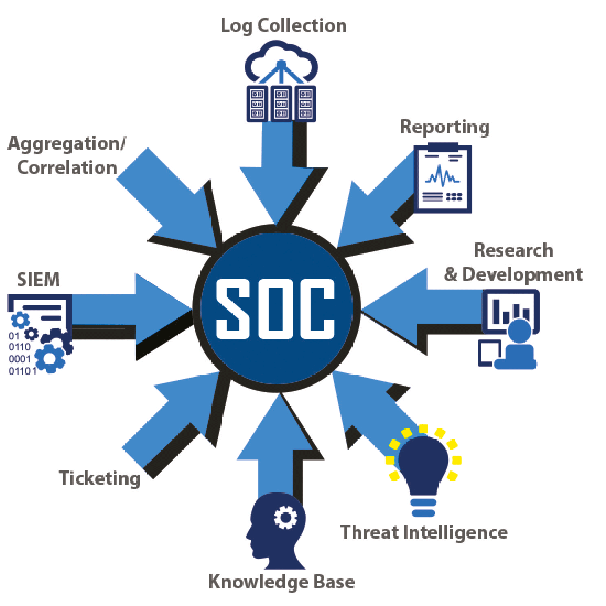

üõ°Ô∏è - Positionnement et organisation
Le positionnement dans la tente était primordial, la défense devant absolument être sur un switch permettant de donner des adresse IP appartenant a notre réseau pour le cartographié.

Les deux premières tables sont pour l'Attaque, les deux suivantes sont pour la Défense et une au fond pour l'Influence.
Une table derrière le photographe est réservée pour les capitaines et lieutenants.
0 - Communication et stratégie
Une coordination stricte était nécessaire. Les capitaines validaient chaque action et s'assuraient de l'avancement de la cartographie et de savoir quels infrastructure on pouvait proteger. Nous utilisions un canal Discord pour synchroniser les infrastructures trouvées et un tableau Excel pour repertorié toutes les adresses IP scannée et les serveurs, application ou pare-feu present dessus.
Ⅰ - Cartographie du réseau
Nous avons utilisé les commandes nmap et masscan pour analyser nos infrastructure et trouver toutes les informations suceptible d'être vulnérable.

Chaque adresse IP a été documenté, chaque interface trouvée a été associé a chaque adresse IP et chaque port du switch, qui repartissait les adresses IP de notre reseau sur chaque ordinateur, a été associé a chaque IP
ⅠⅠ - Surveillance du réseau
Nous avons utilisé Wireshark pour analyser le trafic réseau et détecter les attaques adverses.
Chaque alerte repérer était communiqué pour que nous puissions mettre en place les règles de filtrage et aunsi bloquer les intrusions.
Grâce à ces mise en place, nous avons pu repousser plusieurs tentatives d'intrusion.
Ⅲ - Réaction aux attaques
En cas d'attaque, nous avons rapidement isolé les machines compromises et bloqué les adresses IP suspectes.
Un suivi en temps réel nous a permis de minimiser les impacts et de préserver nos systèmes.
Ⅳ - Evolution de la défense
Vers le milieu de l'exercice, il nous a été fournis un GIC (Groupement d'Intervention Cyber) contenant des outils qui nous permettait de deployer des agents sur nos serveurs, nos machines et qui centralisait les logs, les pare-feu et nous permmettait une bien meilleur protection contre les attaques.
